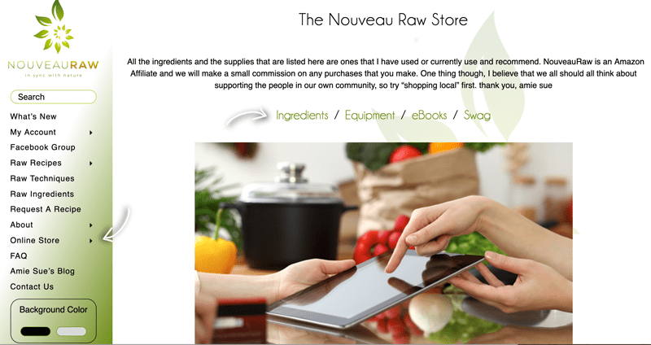

#8 – Online Store (Amazon) My Recommendations
There are four categories under the Online Store button: Ingredients, Equipment, eBooks, and Swag. This section is a store that links to Amazon. Throughout the years I receive endless requests on what equipment or ingredients I use or recommend. Putting the Amazon store together seemed like a great way to point everyone in the direction of what I use in my recipes.

I do earn a few pennies per transaction through Amazon, so thank you for the support should you place an order! The Swag section includes the products that I sell directly such as the reusable shopping bags with the NouveauRaw logo. Check them out; they are super nice!
© AmieSue.com